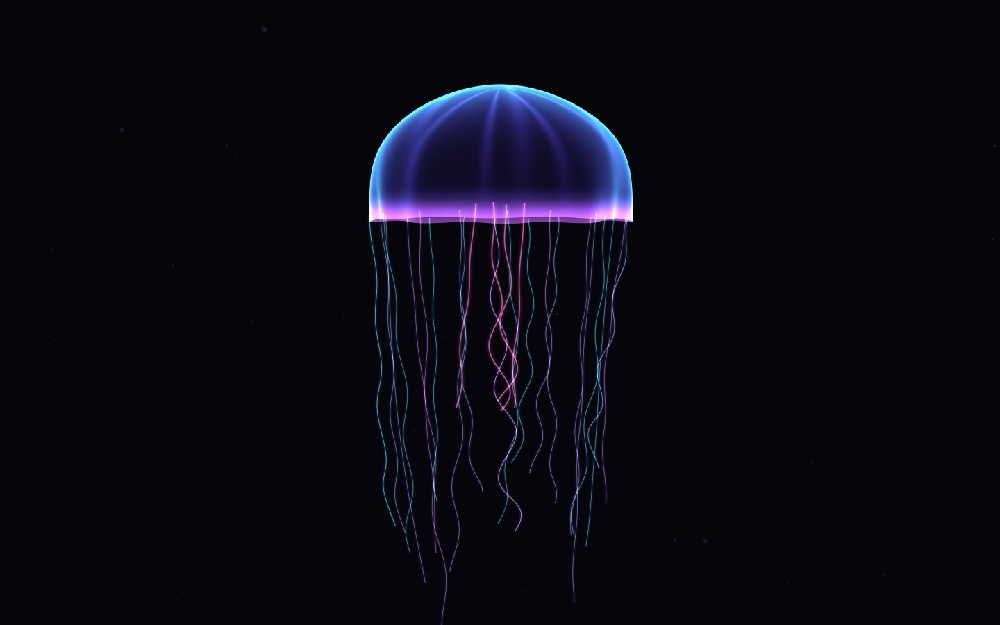
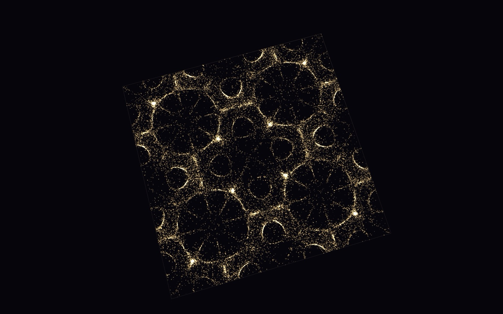
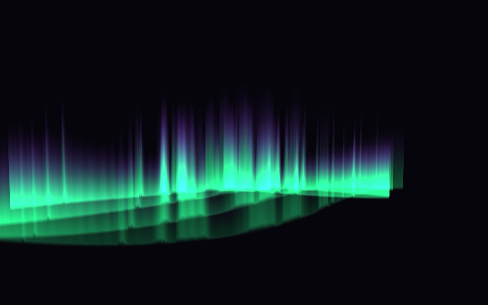
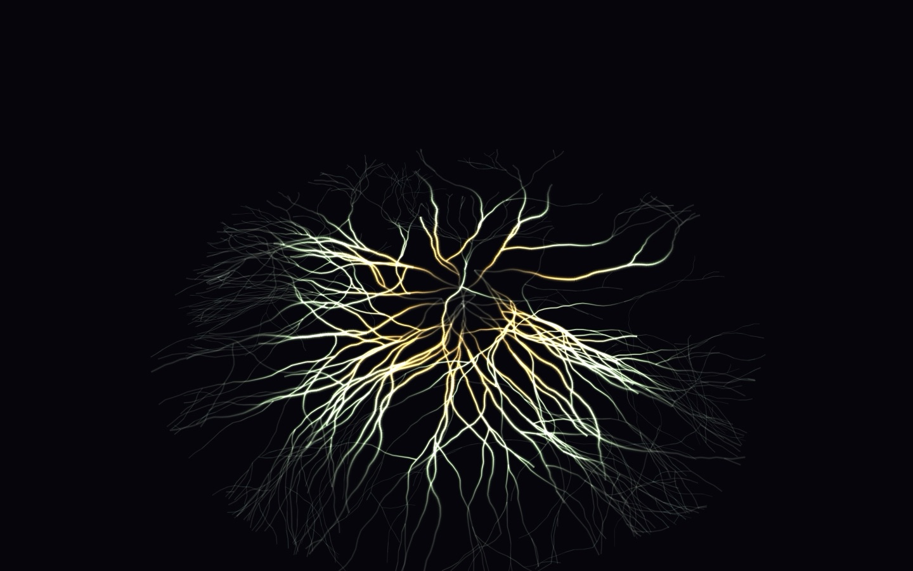
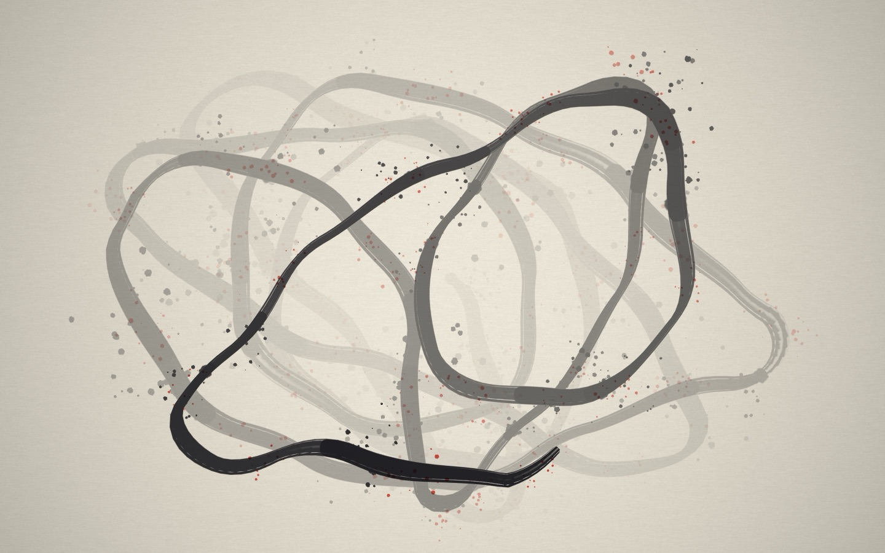
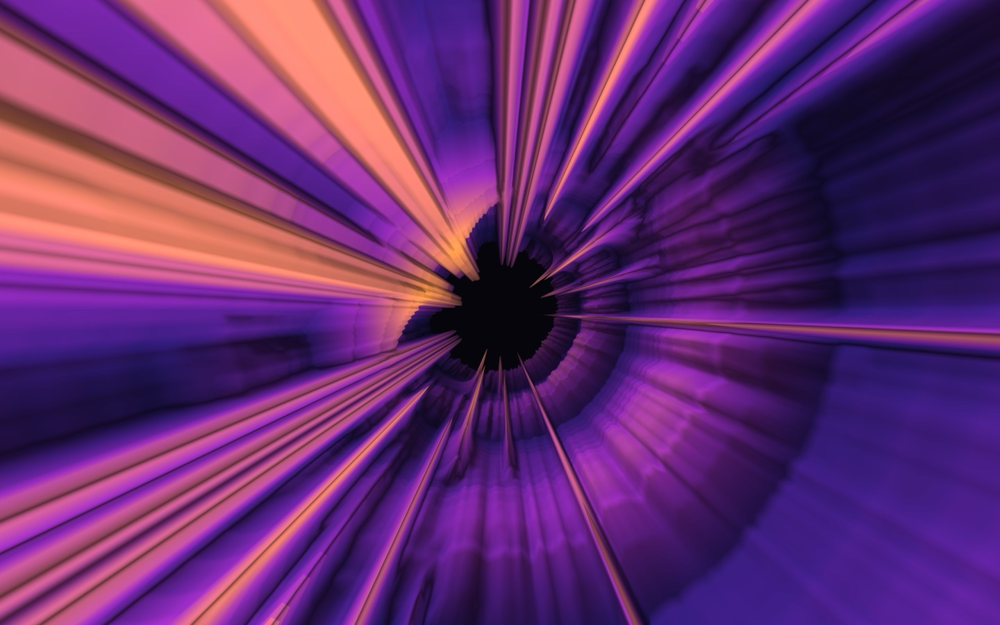

Chladni
See your music.
In 1787, Ernst Chladni made sound visible with sand on a vibrating plate. Chladni does the same with whatever your Mac is playing, in real time.
Download on the Mac App StoreYour second screen, alive with sound
Put Chladni on a spare display while you work, study or unwind. It runs as a live desktop background on the displays you choose, and pauses on its own when they're covered or the music stops.






15 scenes
From a pulsing jellyfish to sand dancing on a Chladni plate.
Your desktop
Full screen, in a window, or as a live background on all your displays.
Private
No microphone, no data collected. The sound is never recorded or stored.